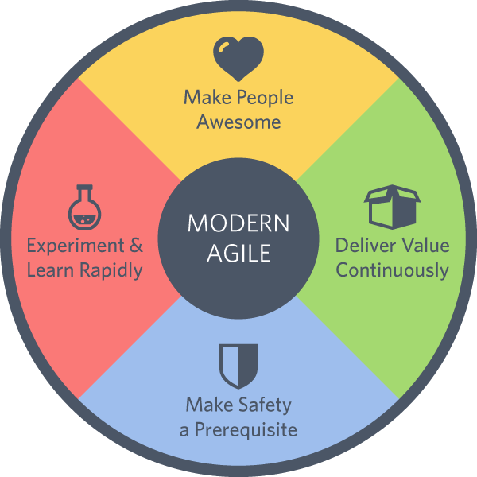

Modern Agile is outcome oriented, principle driven and framework free.Joshua Kerievsky, CEO, Industrial Logic
Steve Jobs used to ask his colleagues, “What incredible benefits can we give to the customer? Where can we take the customer?" In modern agile we ask how we can make people in our ecosystem awesome. This includes the people who use, make, buy, sell or fund our products or services. We learn their context and pain points, what holds them back and what they aspire to achieve. How can we make them awesome?
Anything that isn’t delivered isn’t helping anyone become more awesome or safe. In modern agile we ask ourselves, “How could valuable work be delivered faster?” Delivering value continuously requires us to divide larger amounts of value into smaller pieces that may be delivered safely now rather than later.
Protecting people unlocks their potential and frees them to take risks. We actively make safety a prerequisite by establishing safety before engaging in hazardous work. This means understanding how to protect people’s time, information, reputation, money, health and relationships. We endeavor to make our collaborations, products and services resilient and safe.
You can’t make people awesome or make safety a prerequisite if you aren’t learning. We learn rapidly by experimenting frequently. We make our experiments “safe to fail” so we are not afraid to conduct more experiments. When we get stuck or aren’t learning enough, we take it as a sign that we need to learn more by running more experiments.